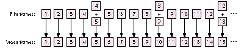
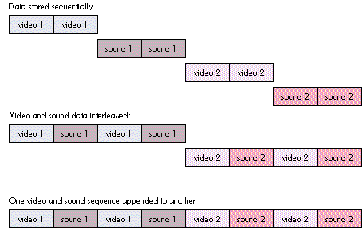
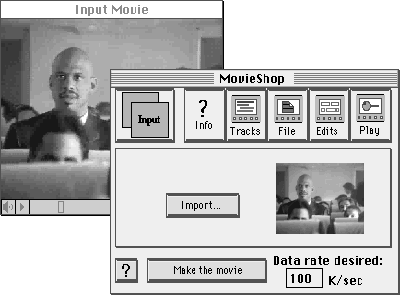
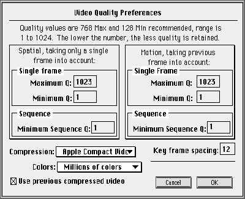
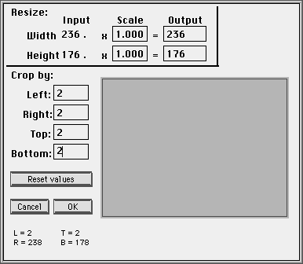
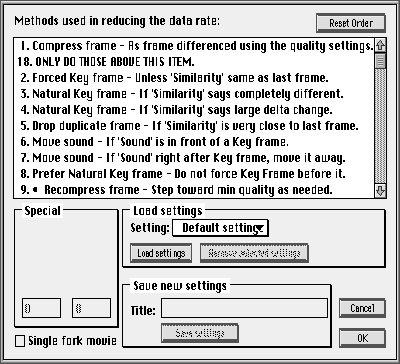

QuickTime 1.5 makes it easier than ever to make CD-playable movies. These tips on
capturing, compressing, and playing back movies will help you use the new Apple
Compact Video compressor to its best advantage, creating movies that will play well off
a standard CD-ROM drive on a Macintosh LC computer.
QuickTime introduced the world of digital video to the Macintosh and enabled a whole
new category of multimedia content: movies. With QuickTime, it's simple to play back
movies in any application and to exchange movies between applications using the
standard cut/copy/paste mechanism. But no one ever said it was going to be easy to
create them!
What makes movie creation tricky is the tradeoffs required to get QuickTime movies
to play off a CD-ROM drive, the most effective distribution medium for digital video.
Uncompressed, full-screen, full-motion video requires a data transfer rate of about
27,000 kilobytes/second, yet a typical CD- ROM drive has a data transfer rate of only
100 kilobytes/second. QuickTime solves this problem by using video compression,
which requires you to make tradeoffs between frame size, frame rate, image quality,
and sound quality when making a movie.
The tips in this article will help you make the right tradeoffs to produce high-quality
movies that will play off CD-ROM. You'll also find tips on capturing digital video,
using the MovieShop utility on this issue's CD to produce compressed movies, and
playing back what you've created. I assume you're already familiar with the basics of
movie making with QuickTime.
Making the right tradeoffs is the key to producing better QuickTime movies. Depending
on your target platform, to get smooth playback you may need to limit the frame size
and rate, minimize the differences between frames, and trade off audio for video
quality.
PLATFORM
Before you get started, you need to decide which Macintosh platform your movie will
play on. Obviously, a Macintosh Quadra 950 with a double-speed CD-ROM drive can
play much larger, higher-quality movies than a Macintosh LC with a standard CD
drive. Table 1 shows some common platforms and their capabilities. (See the following
sections for more on frame size and rate.)
Table 1
Common QuickTime Platforms
Macintosh
Quadra 950
Performa 600
LC II
Macintosh II
For the purposes of this article, our target platform is the Macintosh LC II with an
AppleCD SC CD-ROM drive (transfer rate of 100 kilobytes/second). Movies created
for this platform should play back well on virtually every color Macintosh, covering
as much of the installed base as possible. However, keep in mind that machines that
use NuBus video, such as the Macintosh II, won't have the playback performance of the
LC II. You should always test your movies on the platforms they'll play on.
FRAME SIZE
The frame size determines how large the movie will be on the screen. The larger the
frame size, the greater the number of pixels that have to be updated every frame. This
can be a problem for less powerful machines, so you often need to limit the frame size
to get smooth playback.
Frame sizes are typically specified by horizontal and vertical pixel measurements.
Some common frame sizes for digital video are shown in Table 2.
Table 2 Common Frame Sizes for Digital Video
| Frame Size | Description | Pixels/Frame | Capability Required |
| 640 x 480 | Full-screen | 307,200 | Hardware acceleration |
| 320 x 240 | Quarter-screen | 76,800 | Fast CPU like a Macintosh |
| Quadra | |||
| 240 x 180 | Eighth-screen | 43,200 | Apple Compact Video |
| compressor | |||
| 160 x 120 | Sixteenth-screen | 19,200 | Apple Video compressor |
Note that full-screen movies are practical only with hardware acceleration, and for
quarter-screen movies you need a fast CPU like a Macintosh Quadra. With our LC II
platform and the Apple Compact Video compressor made available by QuickTime 1.5,
we can create eighth-screen movies, which have more than twice the screen area of
the "postage-stamp movies" possible with QuickTime 1.0's Apple Video compressor.
For the Apple Compact Video compressor to function optimally, the frame size should
be a multiple of 4 in each dimension. This is because the compression algorithm uses a
4-pixel by 4-pixel cell.
FRAME RATE
The frame rateis the number of frames displayed in each second of the movie, typically
described in frames per second (fps). The frame rate to use for a movie depends on the
frame rate of the source material, whether film or videotape. For the smoothest
results, you should use a frame rate of which the source material frame rate is a
multiple, but this may only be possible if you have hardware acceleration or a fast
CPU. Still, an acceptable compromise is available if your platform is limited.
The frame rate of source material in the NTSC video format is approximately 30 fps.
Much source material is shot using film at 24 fps and then transferred onto videotape.
Frame rates to use for movies based on these types of source material are shown in
Table 3. Other video standards such as PAL and SECAM have different frame rates; if
your movie is based on one of these types of source material, you'll have to compensate
accordingly. For our target platform, we can use 12 fps with good results.
Table 3
Common Frame Rates for Digital Video
If Your Source Material Is NTSC Video:
| Frame Rate | Description | Capability Required |
| 30 fps | Full-motion | Hardware acceleration |
| 15 fps | Half-motion | Fast CPU like a Macintosh Quadra |
| 12 fps | Half-film rate | Apple Compact Video compressor |
| 10 fps | Third-motion | Apple Video compressor |
If Your Source Material Is Film:
| Frame Rate | Description | Capability Required |
| 24 fps | Full-motion | Hardware acceleration |
| 12 fps | Half-motion | Apple Compact Video compressor |
| 10 fps | Third-video | rate Apple Video compressor |
There are a couple of minor quirks having to do with frame rate that you should be
aware of when you make a movie. First, you'll note that I said the NTSC frame rate
isapproximately 30 fps. For reasons lost in the dawn of television, the NTSC frame
rate is actually 29.97 fps. If you assume the frame rate is 30 fps, long movies can
lose synchronization between sound and video over time, since there are fewer video
frames than expected. For example, if you digitized 100 seconds of video, you would
expect to get 3000 frames, but you would really only get 2997 frames in that period
of time. The GrabGuy utility and the HyperCard® Movie Making Stack (found on
theQuickTime 1.5 Developer CDand on this issue's CD) automatically take care of this
problem, but if you find sound sync drifting over time on long movies, you may need to
duplicate a video frame every 1000 frames to get things back in sync.
The second item to note involves transferring 24-fps film to 30-fps video. On
videotape, each frame is composed of two fields, one containing the odd scan lines and
the other containing the even scan lines. These fields are interlaced to produce the
frame. When film is transferred to video, six extra frames are "made up" every
second. Typically, once every four frames, two adjacent film frames are put into the
two fields of a single video frame to form a fifth frame. Figure 1 shows how this
works. These made-up frames have a blurred look when digitized.

Figure 1 Making Up Extra Frames When Film Is Transferred to Video
You can use a couple of different methods to digitize only the original film frames and
skip the blurry made-up frames. If you have a capture system that can grab individual
video fields, you can set it to capture at 12 fps, and it will skip the duplicate fields and
give the original 12 film frames each second. Or simply capture at 30 fps and throw
away every fifth frame, yielding the original 24 film frames.
FRAME DIFFERENCING
Frame differencingis the technique used by QuickTime of storing and updating only the
pixels that differ from the previous frame, so that much less data has to be stored and
displayed. For example, in Figure 2 the frame on the right contains only the
information needed to update the areas of the screen that differ from the frame on the
left. As a consequence, less data has to be stored on disc for the second frame and it
takes less time to draw. This in turn allows larger frame sizes and frame rates, giving
better-quality movies.
Figure 2 Example of Frame Differencing
When you're using the Apple Compact Video compressor, it's a good idea to create
movies in which not much changes from one frame to the next, since frame
differencing is one way the compressor achieves lower data transfer rates. Here are
some things to keep in mind to get the most benefit from frame differencing:
Frames can't be differenced indefinitely, however. At regular intervals akey frame--
a frame that refreshes the entire movie area, not just the pixels that differ from the
previous frame -- is inserted. You can adjust the interval to achieve the tradeoff
between data rate and movie quality that you desire. Normally, you should have one key
frame per second. The more you put in, the higher the data rate and the better your
movie looks but the less compression gain you get from frame differencing.
SOUND SAMPLING RATE
The standard Macintosh sound rate is 22.254 kHz, so you'll get the highest-quality
audio by sampling to this rate. The Sound Manager is also more efficient at this native
rate, so the movie will play back better. However, because your data transfer rate off
CD-ROM is limited, using higher audio rates will decrease the quality of the video. The
same constraint applies to stereo and 16-bit sound, both of which are supported by
QuickTime: these formats eat up more bandwidth, so the video quality may suffer.
If your source is mostly people talking and not music, you can record audio at the
alternate sampling rate of 11.127 kHz. In many cases this will make your video look
sharper and give acceptable sound quality.
With most audio sampling hardware, it's best to set the hardware at the sampling rate
you desire, since the hardware will often do filtering to avoid aliasing artifacts. One
exception is the MacRecorder digitizer (from MacroMedia), which doesn't filter at
11.127 kHz. If possible, you should record at 22.254 kHz on a MacRecorder and
downsample the audio to 11.127 kHz when you compress the movie. One other thing to
keep in mind when using a MacRecorder to digitize audio at 22.254 kHz is that its
sample rate tends to drift away from the standard Macintosh rate, so you should always
resample it to 22.254 kHz or 11.127 kHz when you compress the movie.
The QuickTime 1.5 Developer CDand this issue's CD contain two utilities for capturing
video: GrabGuy and the HyperCard Movie Making Stack. GrabGuy is an application that
does a multipass grab off a controllable VCR like the Sony µMatic, giving
frame-accurate recording. HyperCard and the Movie Making Stack enable you to get
frame-accurate grabs off controllable Pioneer laser discs. Most video cards also come
with software that enables you to grab raw video directly to RAM or hard disk.
To get the highest possible quality when you're capturing the source material, you
should do three things:
I'll discuss these tips one at a time.
START WITH A CLEAN SOURCE
The less video noise, the better compression and the more benefit from frame
differencing you'll get, so you should digitize from the cleanest, highest-quality video
source possible. The most common video formats, in decreasing order of quality, are
BetaCam, µMatic/S-VHS/Hi8, laser disc, and VHS.
Beware of tapes that have been duplicated many times or played a lot -- they can be
very noisy. If your digitizing card supports S-Video inputs, use them if you can, as
S-Video delivers better quality than composite video.
ADJUST LEVELS
Many digitizing cards support one or more settings with regard to black level, white
level, brightness, and contrast. To enhance compression gains from frame
differencing, you should adjust the black level of your card so that black areas in your
source digitize as truly black pixels. A frame with truly black pixels differs much less
from the original than the same frame with noisy black pixels. Thus, refreshing the
screen with the noisy frame takes more data than refreshing the screen with the clean
frame. Often what looks like black is quite noisy, so you should experiment with your
video card. The same rule applies to white levels.
GRAB AT A LARGER SIZE THAN YOU NEED
Because many video cards do a poor job of scaling down frames when they grab, it's
best to capture at a large size and let QuickDraw do a filtered scale when you compress.
If you're using GrabGuy you don't need to worry, because it will grab 320 x 240 fields
and use QuickDraw to scale them down. If you're grabbing from laser disc, grab frames
at 640 x 480 and scale them down at compression time.
To save disc space, you should grab using JPEG compression set to the highest quality
instead of grabbing raw frames. Most of the quality you might lose this way isn't used
by the Apple Compact Video compressor anyway, so this won't reduce the quality of
your final movie very much. A number of video cards now support hardware JPEG
compression, which makes this even easier.
The MovieShop utility on this issue's CD is indispensable for compressing QuickTime
movies. After an admonition to edit before compressing, I'll take you through the steps
involved in using MovieShop to create CD-playable movies. My emphasis here is more
on what to do than why you're doing it. If you're curious about the reasons you go
through the steps you do, refer to the MovieShop documentation on the CD.
EDIT BEFORE COMPRESSING
To achieve the best possible playback performance with the smallest amount of
memory, you should completely edit your movie in raw form before compressing with
MovieShop. By the same token, it's not a good idea to compress the movie in pieces and
then cut and paste the pieces together to form the final movie, as this will require
extra input/output buffers and may cause QuickTime to run out of memory. If this
happens, movie playback will slow down considerably.
Here's why: Movies are composed of tracks that typically contain video and sound data.
When you capture a movie, the track data is often stored sequentially in the file,
resulting in a file layout like the first one shown in Figure 3. To play this movie,
QuickTime must allocate four large buffers -- one for each track -- and seek between
tracks during playback. This can cause miserable playback performance off CD-ROM
drives, which typically have very slow seek times (we're talking hundreds of
milliseconds).

Figure 3 Ways of Storing Video and Sound Track Data in a Movie
To solve this problem, QuickTime enables you to interleave the video and sound
tracks, resulting in a file layout like the second one shown in Figure 3. Because the
sound and video track data are now close to each other in the file, seeking is minimized
and only two buffers are needed for data transfer. This is often the file layout you get
when you paste two movies together.
The most efficient layout is to append the second video/sound sequence onto the first,
as illustrated by the third file layout in Figure 3, so that only one buffer is needed and
playback is optimized. When you compress with MovieShop, it automatically merges
all the video and sound tracks of a movie into a single video and sound track, thus
giving you the most efficient layout.
SET THE DATA RATE
After importing a movie to compress, the first thing you do in MovieShop is to set the
data rate. (See Figure 4.) To play off CD, a movie must be compressed to deliver a
consistent data rate of 100 kilobytes/second or less, the effective data transfer rate of
the first generation of CD-ROM drives. Some of the newer CD-ROM drives can now
deliver twice this data rate, but you'll probably want to make your movie at 100
kilobytes/second anyway, for backward compatibility. So a data rate of 100 isusually
best for CD playback, while a range from 90 to 105 kilobytes/second will usually
produce good results.

Figure 4 Setting the Data Rate in MovieShop
SET THE VIDEO SETTINGS
Next you indicate your preferences relating to compression method, colors, and key
frame spacing. To do so, choose Video from the Preferences menu. The dialog box
shown in Figure 5 will be displayed. This is where you choose Apple Compact Video as
your compression method. The Apple Compact Video compressor has been optimized for
CD playback and has a built-in data rate constraining algorithm to give consistent
playback from CD. Computationally, it's a highly asymmetric algorithm, taking about
an hour to compress a minute of video. The results are worth it, however.

Figure 5
MovieShop tries to limit the data rate of a movie by adjusting the amount of frame
differencing (motion quality) and lowering the compression quality (spatial quality).
However, since the Apple Compact Video compressor determines motion and spatial
quality internally, you should turn these settings off by entering the numbers shown
in Figure 5. (For details about what these magic numbers mean, see the MovieShop
documentation.) That way, Apple Compact Video will always make the right choices for
the data rate you've chosen.
If your source material is in color, choose "Millions of colors"; if it's in black and
white, choose "256 grays." "Use previous compressed video" should be checked for
most video sources; however, if you're compressing raw animations or composite
movies with a constant background, uncheck this setting to get more benefit from
frame differencing. MovieShop will then use the last uncompressed frame instead of
the last compressed frame as the basis for frame differencing.
The key frame setting should be related to the frame rate of your video. As I mentioned
earlier, you should normally have one key frame per second, although in some cases
you might want to have fewer than one per second to lower the data rate (which will,
however, decrease quality as well).
SET THE SOUND SETTINGS
To change sound settings, choose Sound from the Preferences menu. Selecting 22 kHz
will ensure that your movie uses the standard Macintosh rate of 22.254 kHz. As
discussed earlier, if you're not concerned about audio quality you should probably
resample to 11 kHz as a tradeoff for sharper video. The Video to Sound setting lets you
set how far ahead in seconds the audio is interleaved on the file from the video on the
disc. This setting should normally be at 1.90, but if you find that CD playback is
choppy or the audio portion breaks up, try lowering this number to 1.5. "Interleaved
sound" should always be checked so that the audio and video are interleaved as
explained earlier for smooth CD playback.
SCALE AND CROP THE MOVIE
Now you need to crop the movie, since there's often tape noise and jitter on the edges of
the video frames. At the same time you can scale the movie to ensure that the frame
size is a multiple of 4 pixels in each dimension. (Recall that due to its algorithm, the
Apple Compact Video compressor functions optimally if this is so.) To change cropping
settings and scale the movie, choose Cropping from the Preferences menu. In Figure 6,
the movie is being cropped by 2 pixels on all sides to eliminate noisy edges and make
the output dimension values multiples of 4.

Figure 6 MovieShop's Cropping Dialog
DISABLE EXTRA COMPRESSION METHODS
MovieShop can apply a large number of techniques when compressing a movie to get
the data rate you specify. These techniques are used by the Apple Compact Video
compressor, but since the compressor itself takes care of all data rate limiting, all of
these methods should be turned off. To turn them off, choose Methods from the
Preferences menu. Then drag item 18 to the second position in the list of methods, as
shown in Figure 7.

Figure 7MovieShop's Methods Dialog
The version of MovieShop on the CD (v. 1.0c2) has a bug that causes it to use the
settings for methods 2, 3, 4, and 5 even when they're below item 18. If you're
working with that version, you should additionally set those methods to the following
values to really disable them:
2. Forced Key frame -- 255
3. Natural Key frame -- 1
4. Natural Key frame -- 200
5. Drop duplicate frame -- 255
Again, for details about what these magic numbers mean, see the MovieShop
documentation.
Once you've set up MovieShop this way, click "Make the movie," choose an output file,
and sit back and watch the show. It can be a long wait, but the results will be worth it.
If you're developing an application to play QuickTime movies, there are four things
you can do to make movie playback everything you'd hoped it would be:
OPTIMIZE SCREEN POSITION AND DEPTH
The position of the movie on the screen can affect playback performance. For greatest
efficiency, the left edge of the movie should be aligned to a long-word boundary in
video memory. A new function in QuickTime 1.5 called AlignWindow moves a window to
the optimal screen location for movie playback.
The screen depth also affects playback. If the screen is set to millions of colors, the
movie will play back more slowly than at 256 colors, because there are more bytes to
move to the screen every frame. The Apple Compact Video compressor is optimized
for thousands of colors (16 bits/pixel), so you'll get the best performance and quality
at that depth.
AVOID CLIPPING
If any portion of the movie is clipped, playback performance will be substantially
decreased because QuickTime will have to do a lot more work to draw the frames. Try
to avoid overlapping windows and drawing to multiple screens. Be aware of the menu
bar and the rounded corners on the edges of the Macintosh screen. Set the clipping
region correctly for the movie.
HIDE THE MOVIE CONTROLLER
Displaying and updating the movie controller can cause the movie to play back more
slowly, especially on low-end machines and for shorter movies, so you may want to
hide it to achieve better playback. Still, it's desirable to have an option to show/hide
the controller in your human interface. You might consider using the badge option for
the movie controller to achieve this.
DON'T CALL WAITNEXTEVENT AS OFTEN
Since QuickTime performs all its drawing operations at main event loop time, the
more often you call MoviesTask the better movie playback you'll get. However, most
applications call WaitNextEvent once every event loop, which can go away for a fairly
long time under System 7, effectively reducing the number of times MoviesTask gets
called each second. To improve this, simply call WaitNextEvent only once a second or
so while movies are playing. This will allow background tasks time to run but won't
interfere with foreground event processing.
Now you know a little bit more about making and playing movies than you did before
you sat down with this article. You understand what the tradeoffs are in making
CD-playable movies: to get smooth playback, you may need to limit the frame size and
rate, minimize the differences between frames, and trade off audio for video quality.
You know that to get the best possible quality when you capture, you need to start with
a clean source, adjust levels, and grab at a larger size than you need. You know how to
use MovieShop with the Apple Compact Video compressor to compress your movie. And
you know that to get the best possible playback, you need to optimize the movie's
screen position and depth, avoid clipping any portion of the movie, hide the movie
controller, and not call WaitNextEvent as often.
In a nutshell, if you want your movie to play well on a Macintosh LC II with an AppleCD
SC and thousands of colors, you should use the following setup:
With this knowledge, you can really put this technology to work and produce a
QuickTime movie with the best of them. While you may not become the next Steven
Spielberg, you can at least see your name in lights (check out theQuickTime 1.5
Developer CDAbout Box movies to see the QuickTime team in action). See you at the
movies!
KIP OLSON lives by the motto "I never met an avalanche I didn't like" and spends his
winters skiing the extreme in places like Chamonix, Jackson Hole, and Hoboken. When
not cornice surfing, he's been known to cast a #12 Adams to a rising brookie and score
a perfect 18 at putt-putt golf. He works for Apple in his spare time. *
For more information on QuickTime 1.5, your best source is the QuickTime
Developer's Kit v. 1.5, available from APDA. This kit includes the complete printed
documentation for QuickTime 1.5 as well as the QuickTime 1.5 Developer CD , which
is full of example code, movies, and utilities. The new Inside Macintosh: QuickTime
and Inside Macintosh: QuickTime Components together provide a complete description
of QuickTime 1.5. *
For more on capturing, see the article "Video Digitizing Under QuickTime" in this
issue. *
For more information on AlignWindow and other alignment routines, see the
Image Compression Manager chapter of the QuickTime 1.5 Developer's Kit
documentation, and Inside Macintosh: QuickTime .*
THANKS TO OUR TECHNICAL REVIEWERS Dean Blackketter, Bill Guschwan,
Peter Hoddie, Eric Hoffert *